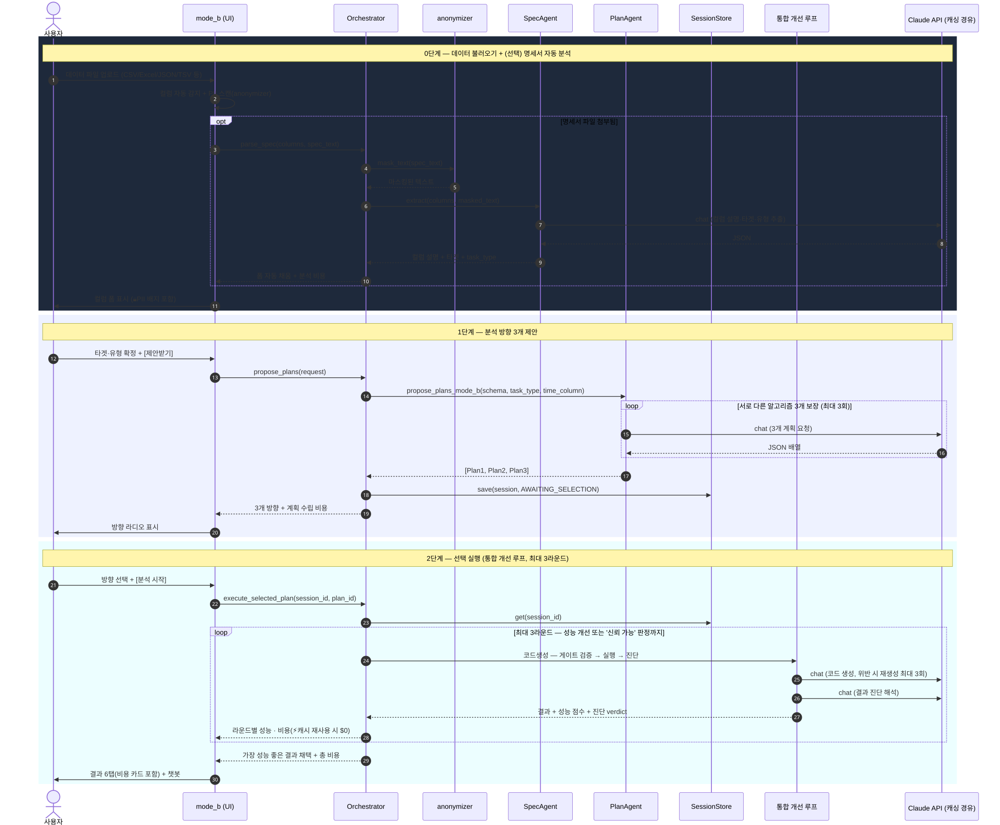

사용자 · 앱(3-Tier) · 외부 시스템(Claude API, 데이터 파일)의 관계 조감도.

시스템을 가장 멀리서 본 조감도입니다. 우리 앱이 누구와(사용자), 무엇과(Claude AI, 데이터 파일) 연결되는지만 보여줍니다.
Presentation / Logic / Data / Domain 레이어별 모듈과 의존 방향.

앱 내부를 역할별로 3개 층으로 나누고, 각 층에 어떤 부품(파일)이 들어 있는지 보여줍니다. 회색 점선으로 표시된 mode_a.py는 현재 화면에는 안 보이지만 코드는 남아있는 부분입니다.
데이터 로드 → 명세서 자동 분석 → 계획 3개 제안 → 선택 → 통합 개선 루프까지, 현재 유일하게 활성화된 흐름.

이제 사용자가 실제로 쓰는 유일한 경로를 처음부터 끝까지 보여줍니다. 예전엔 "완전 자동(Mode A)"과 "반자동(Mode B)" 두 갈래가 있었는데, 지금은 Mode B 하나로 통일됐고 그 안에 기능이 더 늘었습니다.
PENDING → … → COMPLETED / FAILED 상태 전이와 Mode B 분기.

하나의 분석 작업이 시작부터 끝까지 거치는 상태들과, 어떤 조건에서 다음 상태로 넘어가는지를 보여줍니다. 이 흐름 자체는 이전과 동일합니다.
코드 생성 → 검증 → 실행 → 진단을 최대 3라운드 반복하며 가장 나은 결과를 채택하는 이중 루프.

예전엔 "코드에 규칙 위반이 있으면 다시 짜기"만 있었는데, 이제는 그 바깥에 "결과 자체가 별로면 통째로 다시 시도"하는 루프가 하나 더 생겼습니다. 이중 반복 구조입니다.
정규식이 아닌 AST(코드 구조 분석) 기반으로 전환된 6가지 코드 검증 규칙.

AI가 짠 코드가 통계적으로 반칙을 저지르지 않았는지 검사하는 6가지 자동 검사관입니다. 예전엔 3가지였고 문자열 검색 방식이었는데, 이제는 코드의 실제 구조를 분석하는 더 똑똑한 방식으로 바뀌었고 항목도 늘었습니다.
룰 기반 체크 → 종합 판정 → 개인정보 마스킹 → LLM 해석으로 이어지는 EvalAgent 흐름.

모델이 나온 뒤, 그 결과가 신뢰할 만한지 판정하는 과정입니다. 이번에 다중공선성 체크와 개인정보 마스킹 단계가 추가됐습니다.
컬럼명 + 실제 값 패턴으로 민감정보를 찾아내고, AI에게 보내기 전 가리는 전체 흐름.

데이터에 이름·전화번호·이메일 같은 개인정보가 섞여 있으면 자동으로 찾아내고, AI에게 보내는 텍스트에서 가려주는 전체 과정입니다.
홍**, 010-****-5678처럼 일부만 보이게 바꿉니다.Session · Schema · Plan · Result 등 데이터 구조의 관계.

시스템 안에서 정보가 어떤 상자(데이터 구조)에 담겨 오가는지 보여줍니다. 컬럼 상자에 개인정보 종류가, 계획 상자에 시간 컬럼(시계열용) 필드가 새로 추가됐습니다.
LLMProvider 인터페이스로 Claude ↔ 로컬 모델을 갈아끼우는 구조 + 응답 캐싱 계층.

AI 일꾼들이 Claude에 직접 묶여 있지 않고 표준 규격(콘센트)을 통해 연결돼 있다는 구조는 그대로입니다. 이번에 콘센트와 Claude 사이에 "같은 질문 기억하기" 장치(캐싱)가 새로 끼워졌습니다.